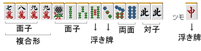

牌理打牌
牌理是为了有效率地完成四面子一雀头的理论。
麻将是手牌制作，成为根本的思考方法。
同样意思的词有"牌效率"。
麻将这个游戏，如果以一局为单位来考虑的话
"4人中谁最早完成四面子一雀头" 是竞争的游戏。
所以根据牌理选择切牌是基本。
麻将的手牌有"速度"、"高度"、"守备力"三个要素。
其中"速度"是最重要的。
因为可以用速度来覆盖高度和守备力。
无论多么高的手牌如果不和牌就不能增加点棒。
早和牌是，阻止将来可能和牌的对手的手牌，考虑在实际和牌的点数上有+α。
另外如果在对家听牌之前和牌的话，就不会被振入。速度是"手牌的生命"。记住被手役夺走眼睛，逃跑和牌是最不应该做的事情。
"外表的华丽，只会延迟和牌的巡目而已"
这是漫画《赌博默示录》的台词。真是名言。
前置就这些，来叙述"牌理打牌"是什么意思吧。
例


例如这个手牌怎样考虑呢。
中可以看出来，如果索子完成上搭子的话，也可以瞄准三色。
麻将初学者，往往只考虑可能制作的记住的手役。
因此，


 摸
摸 宝牌
宝牌
在这里切[五索]这样的失败经常发生。
重要的是从构成手牌的13张（+1张）来考虑。

手牌是这样的。
四面子一雀头中，缺少的是什么呢。二面子·雀头已经完成。

 两面听可以计算一面子，所以剩下的是一面子。
两面听可以计算一面子，所以剩下的是一面子。
其他不存在搭子，所以必须用剩下的


 来制作。
来制作。
那么最难以制作搭子的是哪个…
这样考虑的话，麻将中切什么牌好并不是那么烦恼就能得到答案的。分析手牌，消去法选择应该切牌的候选，然后比较那些牌就可以。
重要的是"比较"。通过比较，大幅减少切牌错误。
如果是这个手牌的话，面子·搭子没有使用的


 是切牌的候选。
是切牌的候选。
分别把握有什么功能，考虑最不要的牌。
切牌候选的列举和比较的重复。
这就是牌理打牌，是麻将的基本。